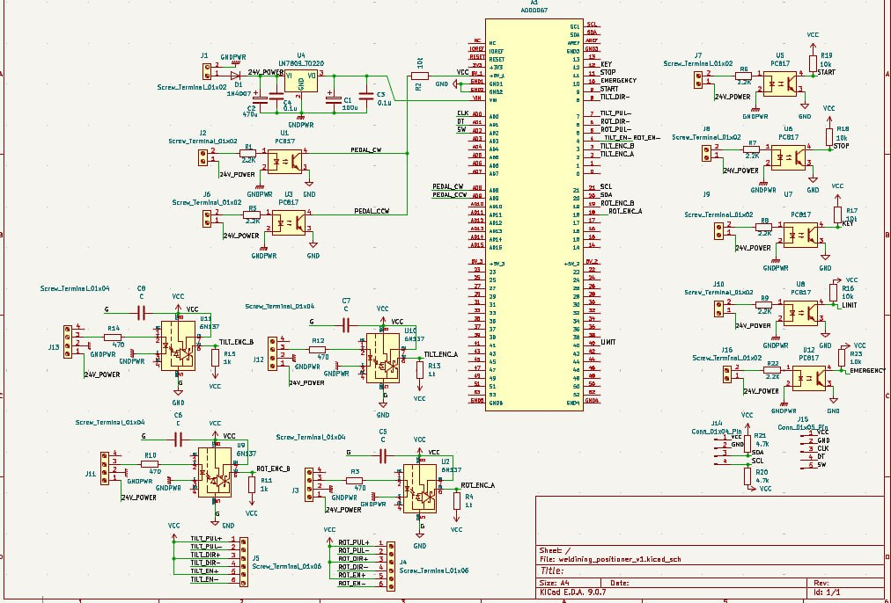
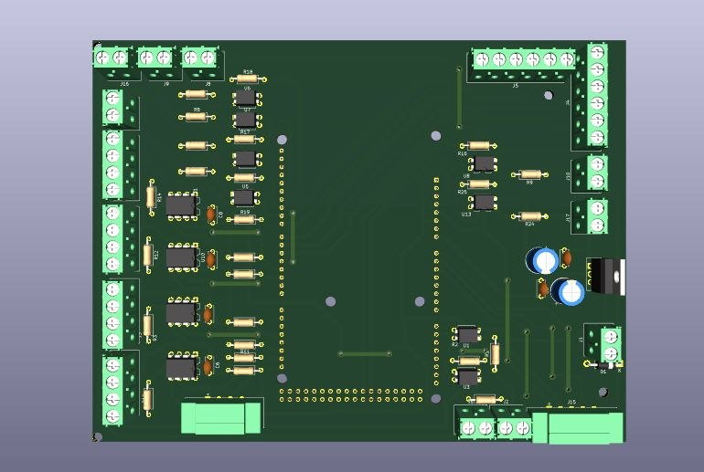
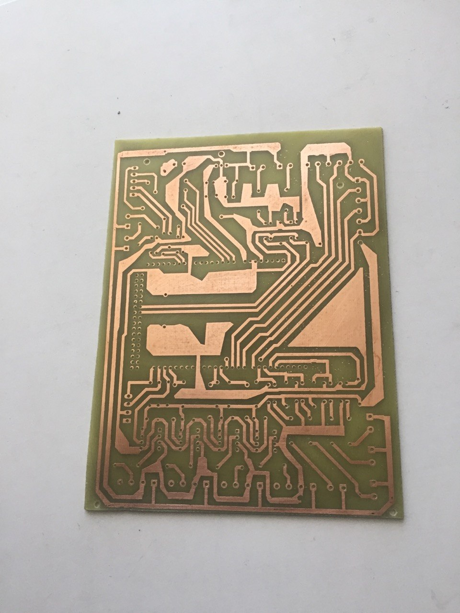
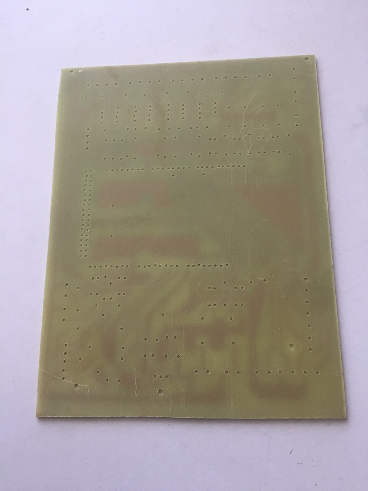

PCB Design and Fabrication
KiCad · Electronic Circuit Design · PCB Layout · PCB Fabrication
Project Overview
This project involved the design and fabrication of a printed circuit board (PCB) for the electronic control system of a dual-axis welding positioner.
KiCad was used to develop the electronic circuit schematic and PCB layout. The board was also visualized in 3D and fabricated as a physical prototype.
My Contributions
- Electronic control circuit schematic design using KiCad
- PCB layout and component placement
- 3D visualization of the PCB design
- PCB fabrication and prototype preparation
- Integration work for the welding positioner's control system
PCB Design and Fabrication Gallery

Circuit design developed using KiCad.

Three-dimensional visualization of the PCB.

Copper track side of the physical board.

Fabricated board prepared for component assembly.
Tools and Technologies
KiCad · Electronic Circuit Design · PCB Layout · 3D PCB Visualization · PCB Fabrication
Project Application
The PCB was developed as part of the electronic control system for a dual-axis welding positioner. It supports the broader development of the machine's control system.
Related Project: Dual-Axis Welding Positioner